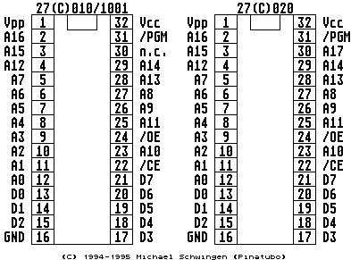

Previous
Next
TOC
Im TT030 kann man genauso wie in den älteren Computern ein umschalt-
bares TOS einsetzen!
Für den TT030 besorgt man sich vier Eproms des Typ 27020 (27C020)
und programmiert sie mit den gewünschten Betriebssystemen, danach
werden die Chips ganz normal in die Fassungen U601, U602, U603 und
U604 eingesetzt.
Die Pin 30 aller Eproms müssen seitlich weggebogen werden (also aus
der Fassung raus). Der Schalter zum umschalten der Betriebssystem-
versionen wird an die Pin 30 aller 4 Eproms gelötet, die anderen
zwei Kontakte des Schalter werden dann jeweils an zugänglicher
Stelle an +5V (Pin 32 der Eproms) und Ground (Pin 16 der Eproms)
verlötet.
Achtung: Es gibt zwei grundsätzliche Platinenversionen beim TT030!
Bei der einen sitzen die Chips mit dem TOS Betriebssystem unterhalb
der Festplatte (Blech TT's), während bei der neueren Platinenversion
die Chips unmittelbar vor/unter der Fastram-Platine sitzen.

Info zur Pinbelegung
Kapitel TOS-Umschaltung im TT030 Computer, Seite 1